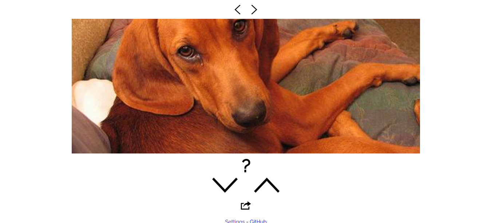
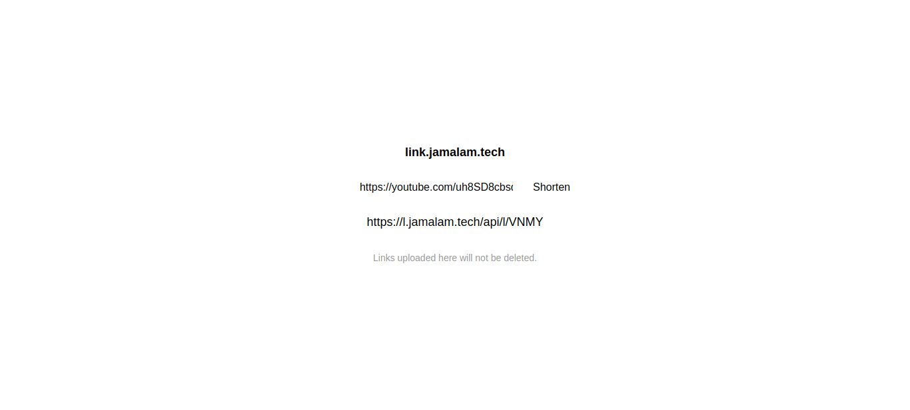
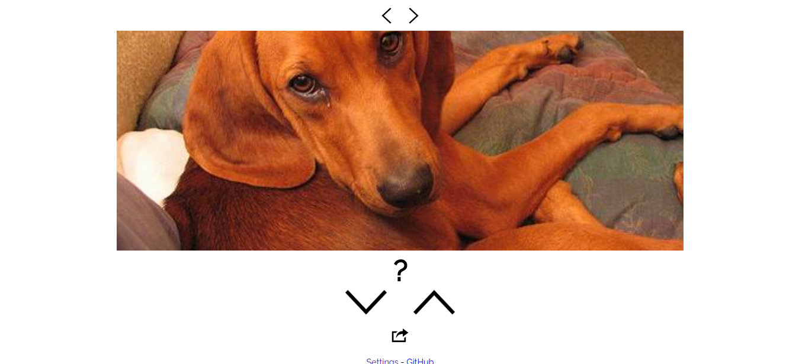
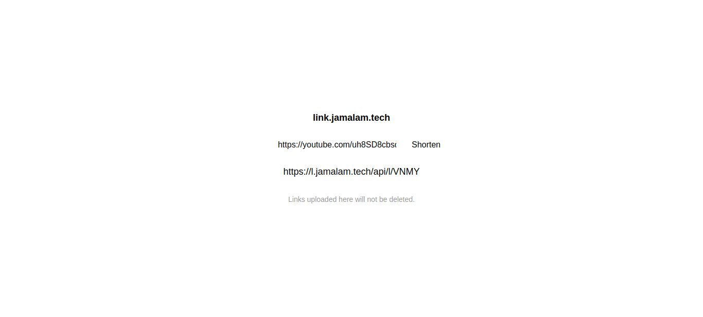

Portfolio
Websites I Operate
These are some websites that I have made and hosted. You can find more in depth explanations in the portfolio above.
Hi I'm Jamalam! This page is here to store information about projects I've done so I can refer to them in the future and show them to others. If you're interested, I also have a blog hosted at jamalam.tech/blog .
These are some websites that I have made and hosted. You can find more in depth explanations in the portfolio above.
I have been a developer since 2016, starting off with Python and C#, but now primarily working in Java, Kotlin and JS/TS to create things that interest me such as Minecraft mods (using the Quilt toolchain), Discord bots (using Kotlin and Kordex) and webpages/APIs usually using Deno and Aleph.
I am open for commissions for Minecraft mods and I have worked with YouTubers and server owners before (see portfolio above). If you are interested, please contact me using the information below.
 


